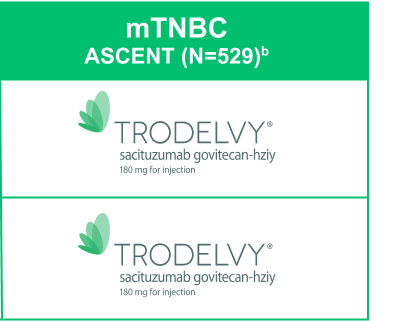
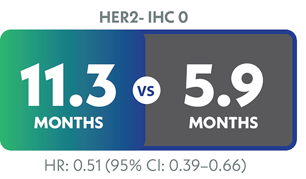
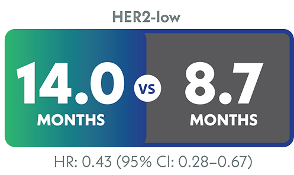

| Developed under the direction and sponsorship of Gilead Oncology. |
| Please see full Prescribing Information, including BOXED WARNING for Neutropenia and Diarrhea, and Important Safety Information below. |
|
|
| INDICATION |
| TRODELVY® (sacituzumab govitecan-hziy) is a Trop-2-directed antibody and topoisomerase inhibitor conjugate indicated for the treatment of adult patients with unresectable locally advanced or metastatic triple-negative breast cancer (mTNBC) who have received two or more prior systemic therapies, at least one of them for metastatic disease. |
| |
| TRODELVY is the only ADC to provide significantly improved OS in mTNBC1 |
| ASCENT: a Phase 3, randomized, active-controlled, open-label study (N=529). The efficacy analysis included PFS in brain-met–negative patients (primary endpoint) by BICR based on RECIST 1.1 criteria, with PFS for the full population (all patients with and without brain metastases) and OS as secondary endpoints. Patients were randomized (1:1) to receive TRODELVY 10 mg/kg as an IV infusion on Days 1 and 8 of a 21-day cycle (n=267) or physician’s choice of single-agent chemotherapy (n=262), which included eribulin, vinorelbine, gemcitabine, or capecitabine. Patients were treated until disease progression or unacceptable toxicity.1,2 |
| mPFS |
| • |
Brain-met–negative population (primary endpoint): 5.6 months with TRODELVY (95% CI: 4.3–6.3) (n=235) vs 1.7 months with single-agent chemotherapy (95% CI: 1.5–2.6) (n=233); HR: 0.41 (95% CI: 0.32–0.52); P<0.0012 |
| • |
Full population: 4.8 months with TRODELVY (95% CI: 4.1–5.8) (n=267) vs 1.7 months with single-agent chemotherapy (95% CI: 1.5–2.5) (n=262); HR: 0.43 (95% CI: 0.35–0.54); P<0.00011 |
|
| mOS |
| • |
Brain-met–negative population: 12.1 months with TRODELVY (95% CI: 10.7–14.0) (n=235) vs 6.7 months with single-agent chemotherapy (95% CI: 5.8–7.7) (n=233); HR: 0.48 (95% CI: 0.38–0.59); P<0.0012 |
| • |
Full population: 11.8 months with TRODELVY (95% CI: 10.5–13.8) (n=267) vs 6.9 months with single-agent chemotherapy (95% CI: 5.9–7.6) (n=262); HR: 0.51 (95% CI: 0.41–0.62); P<0.00011 |
|
|
|
|
| IMPORTANT SAFETY INFORMATION |
| BOXED WARNING: NEUTROPENIA AND DIARRHEA |
| • |
TRODELVY can cause severe, life-threatening, or fatal neutropenia. Withhold TRODELVY for absolute neutrophil count below 1500/mm3 or neutropenic fever. Monitor blood cell counts periodically during treatment. Primary prophylaxis with G-CSF is recommended for all patients at increased risk of febrile neutropenia. Initiate anti-infective treatment in patients with febrile neutropenia without delay. |
| • |
TRODELVY can cause severe diarrhea. Monitor patients with diarrhea and give fluid and electrolytes as needed. At the onset of diarrhea, evaluate for infectious causes and, if negative, promptly initiate loperamide. If severe diarrhea occurs, withhold TRODELVY until resolved to ≤ Grade 1 and reduce subsequent doses. |
|
| Please see additional Important Safety Information below. |
|
TRODELVY was studied across HER2- IHC status in pretreated mTNBC3 |
|
|
| Post hoc subgroup results in patients with HER2-low and IHC 0 status3,a |
| IHC and ISH results for the full population of ASCENT were analyzed retrospectively to determine the efficacy of TRODELVY by HER2- status. |
| • |
Patients with known HER2-positive disease were ineligible for ASCENT3 |
| • |
Demographics and baseline characteristics between the following populations were comparable: the ASCENT full population (all patients with and without brain metastases) and HER2-evaluable full population, including HER2 IHC 0 and HER2-low (defined as IHC 1+ or IHC 2+ with negative ISH)1,3 |
|
| a |
Limitation: These results are from a post hoc subgroup analysis of the Phase 3 ASCENT study, were not powered for statistical analysis, and should be considered descriptive only. The lack of central assessment for HER2 expression and the 21% of patients in the ASCENT full population with missing specific HER2 IHC results are known limitations of this study. Therefore, these results require cautious interpretation and could represent chance findings. |
|
HER2-low (IHC 1+, IHC 2+/ISH-)
23% (n=123) of patients were IHC 1+ or IHC 2+/ISH-c |
HER2- IHC 0
55% (n=293) of patients were IHC 0d |
|
 |
|
|
| 79% of patients in the ASCENT ITT population (N=529) were HER2-evaluable by IHC; 21% were unevaluable by IHC3 |
| • |
ASCENT included 267 patients treated with TRODELVY and 262 patients treated with single-agent chemotherapy |
| • |
113 patients were missing specific HER2 IHC results (TRODELVY: 21%, n=55; single-agent chemotherapy: 22%, n=58) |
|
| Patients who were HER2-evaluable were divided into 2 groups by IHC status: HER2-low (IHC 1+, IHC 2+/ISH-) and HER2 IHC 03,d |
| • |
HER2-low: TRODELVY: 24%, n=63; single-agent chemotherapy: 23%, n=60 |
| • |
IHC 0: TRODELVY: 56%, n=149; single-agent chemotherapy: 55%, n=144 |
|
About one-third of HER2-evaluable patients
in ASCENT had HER2-low status.3 |
| Consistent OS results across HER2- IHC status compared to the full population3 |
| mOS (TRODELVY vs single-agent chemotherapy) |
 |
 |
|
|
|
|
|
| b |
21% (n=113) of the patients in ASCENT were IHC unevaluable.3 |
| c |
HER2-low defined as IHC 1 + or IHC 2+/ISH-.3 |
| d |
HER2-negative status was based on local assessment of the most recent biopsy/pathology report.3 |
|
| Serious adverse reactions in ASCENT1 |
| • |
Serious adverse reactions occurred in 27% of patients receiving TRODELVY |
| • |
Serious adverse reactions in >1% of patients receiving TRODELVY included neutropenia (7%), diarrhea (4%), and pneumonia (3%) |
|
| Most common adverse reactions and lab abnormalities in ASCENT1 |
| • |
The most common (≥25%) adverse reactions, including lab abnormalities, were decreased hemoglobin (94%), decreased lymphocyte count (88%), decreased leukocyte count (86%), decreased neutrophil count (78%), fatigue (65%), diarrhea (59%), nausea (57%), increased glucose (49%), alopecia (47%), constipation (37%), decreased calcium (36%), vomiting (33%), decreased magnesium (33%), decreased potassium (33%), increased albumin (32%), abdominal pain (30%), decreased appetite (28%), increased aspartate aminotransferase (27%), increased alanine aminotransferase (26%), increased alkaline phosphatase (26%), and decreased phosphate (26%) |
|
| Treat your 2L+ mTNBC patients with TRODELVY across HER2- IHC status1,4 |
|
|
| IMPORTANT SAFETY INFORMATION (cont’d) |
| CONTRAINDICATIONS |
| • |
Severe hypersensitivity reaction to TRODELVY. |
|
| WARNINGS AND PRECAUTIONS |
| Neutropenia: Severe, life-threatening, or fatal neutropenia can occur as early as the first cycle of treatment and may require dose modification. Neutropenia occurred in 64% of patients treated with TRODELVY. Grade 3-4 neutropenia occurred in 49% of patients. Febrile neutropenia occurred in 6%. Neutropenic colitis occurred in 1.4%. Primary prophylaxis with G-CSF is recommended starting in the first cycle of treatment in all patients at increased risk of febrile neutropenia, including older patients, patients with previous neutropenia, poor performance status, organ dysfunction, or multiple comorbidities. Monitor absolute neutrophil count (ANC) during treatment. Withhold TRODELVY for ANC below 1500/mm3 on Day 1 of any cycle or below 1000/mm3 on Day 8 of any cycle. Withhold TRODELVY for neutropenic fever. Treat neutropenia with G-CSF and administer prophylaxis in subsequent cycles as clinically indicated or indicated in Table 2 of USPI. |
| Diarrhea: Diarrhea occurred in 64% of all patients treated with TRODELVY. Grade 3-4 diarrhea occurred in 11% of patients. One patient had intestinal perforation following diarrhea. Diarrhea that led to dehydration and subsequent acute kidney injury occurred in 0.7% of all patients. Withhold TRODELVY for Grade 3-4 diarrhea and resume when resolved to ≤ Grade 1. At onset, evaluate for infectious causes and if negative, promptly initiate loperamide, 4 mg initially followed by 2 mg with every episode of diarrhea for a maximum of 16 mg daily. Discontinue loperamide 12 hours after diarrhea resolves. Additional supportive measures (e.g., fluid and electrolyte substitution) may also be employed as clinically indicated. Patients who exhibit an excessive cholinergic response to treatment can receive appropriate premedication (e.g., atropine) for subsequent treatments. |
| Hypersensitivity and Infusion-Related Reactions: TRODELVY can cause serious hypersensitivity reactions including life-threatening anaphylactic reactions. Severe signs and symptoms included cardiac arrest, hypotension, wheezing, angioedema, swelling, pneumonitis, and skin reactions. Hypersensitivity reactions within 24 hours of dosing occurred in 35% of patients. Grade 3-4 hypersensitivity occurred in 2% of patients. The incidence of hypersensitivity reactions leading to permanent discontinuation of TRODELVY was 0.2%. The incidence of anaphylactic reactions was 0.2%. Pre-infusion medication is recommended. Have medications and emergency equipment to treat such reactions available for immediate use. Observe patients closely for hypersensitivity and infusion-related reactions during each infusion and for at least 30 minutes after completion of each infusion. Permanently discontinue TRODELVY for Grade 4 infusion-related reactions. |
| Nausea and Vomiting: TRODELVY is emetogenic and can cause severe nausea and vomiting. Nausea occurred in 64% of all patients treated with TRODELVY and Grade 3-4 nausea occurred in 3% of these patients. Vomiting occurred in 35% of patients and Grade 3-4 vomiting occurred in 2% of these patients. Premedicate with a two or three drug combination regimen (e.g., dexamethasone with either a 5-HT3 receptor antagonist or an NK1 receptor antagonist as well as other drugs as indicated) for prevention of chemotherapy-induced nausea and vomiting (CINV). Withhold TRODELVY doses for Grade 3 nausea or Grade 3-4 vomiting and resume with additional supportive measures when resolved to Grade ≤ 1. Additional antiemetics and other supportive measures may also be employed as clinically indicated. All patients should be given take-home medications with clear instructions for prevention and treatment of nausea and vomiting. |
| Increased Risk of Adverse Reactions in Patients with Reduced UGT1A1 Activity: Patients homozygous for the uridine diphosphate-glucuronosyl transferase 1A1 (UGT1A1)*28 allele are at increased risk for neutropenia, febrile neutropenia, and anemia and may be at increased risk for other adverse reactions with TRODELVY. The incidence of Grade 3-4 neutropenia was 58% in patients homozygous for the UGT1A1*28, 49% in patients heterozygous for the UGT1A1*28 allele, and 43% in patients homozygous for the wild-type allele. The incidence of Grade 3-4 anemia was 21% in patients homozygous for the UGT1A1*28 allele, 10% in patients heterozygous for the UGT1A1*28 allele, and 9% in patients homozygous for the wild-type allele. Closely monitor patients with known reduced UGT1A1 activity for adverse reactions. Withhold or permanently discontinue TRODELVY based on clinical assessment of the onset, duration and severity of the observed adverse reactions in patients with evidence of acute early-onset or unusually severe adverse reactions, which may indicate reduced UGT1A1 function. |
| Embryo-Fetal Toxicity: Based on its mechanism of action, TRODELVY can cause teratogenicity and/or embryo-fetal lethality when administered to a pregnant woman. TRODELVY contains a genotoxic component, SN-38, and targets rapidly dividing cells. Advise pregnant women and females of reproductive potential of the potential risk to a fetus. Advise females of reproductive potential to use effective contraception during treatment with TRODELVY and for 6 months after the last dose. Advise male patients with female partners of reproductive potential to use effective contraception during treatment with TRODELVY and for 3 months after the last dose. |
| ADVERSE REACTIONS |
| In the pooled safety population, the most common (≥ 25%) adverse reactions including laboratory abnormalities were decreased leukocyte count (84%), decreased neutrophil count (75%), decreased hemoglobin (69%), diarrhea (64%), nausea (64%), decreased lymphocyte count (63%), fatigue (51%), alopecia (45%), constipation (37%), increased glucose (37%), decreased albumin (35%), vomiting (35%), decreased appetite (30%), decreased creatinine clearance (28%), increased alkaline phosphatase (28%), decreased magnesium (27%), decreased potassium (26%), and decreased sodium (26%). |
| In the ASCENT study (locally advanced or metastatic triple-negative breast cancer), the most common adverse reactions (incidence ≥25%) were fatigue, diarrhea, nausea, alopecia, constipation, vomiting, abdominal pain, and decreased appetite. The most frequent serious adverse reactions (SAR) (>1%) were neutropenia (7%), diarrhea (4%), and pneumonia (3%). SAR were reported in 27% of patients, and 5% discontinued therapy due to adverse reactions. The most common Grade 3-4 lab abnormalities (incidence ≥25%) in the ASCENT study were reduced neutrophils, leukocytes, and lymphocytes. |
| DRUG INTERACTIONS |
| UGT1A1 Inhibitors: Concomitant administration of TRODELVY with inhibitors of UGT1A1 may increase the incidence of adverse reactions due to potential increase in systemic exposure to SN-38. Avoid administering UGT1A1 inhibitors with TRODELVY. |
| UGT1A1 Inducers: Exposure to SN-38 may be reduced in patients concomitantly receiving UGT1A1 enzyme inducers. Avoid administering UGT1A1 inducers with TRODELVY. |
| Please see full Prescribing Information, including BOXED WARNING. |
|
|
| 2L+=second line and later; ADC=antibody-drug conjugate; BICR=blinded independent central review; brain-met=brain metastases; CI=confidence interval; HER2=human epidermal growth factor receptor 2; HER2-=human epidermal growth factor receptor 2–negative; HR=hazard ratio; IHC=immunohistochemistry; ISH=in situ hybridization; ITT=intent-to-treat; IV=intravenous; mBC=metastatic breast cancer; mOS=median overall survival; mPFS=median progression-free survival; mTNBC=metastatic triple-negative breast cancer; OS=overall survival; PFS=progression-free survival; RECIST=Response Evaluation Criteria in Solid Tumors. |
| References:
1. TRODELVY. Prescribing information. Gilead Sciences, Inc.; March 2025.
2. Bardia A, Hurvitz SA, Tolaney SM, et al; ASCENT Clinical Trial Investigators. Sacituzumab govitecan in metastatic triple-negative breast cancer. N Engl J Med. 2021;384(16):1529-1541.
3. Hurvitz SA, Bardia A, Punie K, et al. Sacituzumab govitecan efficacy in patients with metastatic triple-negative breast cancer by HER2 immunohistochemistry status: findings from the phase 3 ASCENT study. Poster presented at: European Society for Medical Oncology Breast Cancer Congress; May 3–5, 2022; Berlin, Germany. Poster 168P.
4. Immunomedics, Inc. An international, multi-center, open-label, randomized, phase III trial of sacituzumab govitecan versus treatment of physician choice in patients with metastatic triple-negative breast cancer who received at least two prior treatments. Published November 18, 2015. Updated June 22, 2017. Accessed June 26, 2025.
https://www.nejm.org/doi/suppl/10.1056/NEJMoa2028485/suppl_file/nejmoa2028485_protocol.pdf |
|
|
| Privacy Policy | Contact Us |
| TRODELVY, the TRODELVY logo, GILEAD, and the GILEAD logo are trademarks of Gilead Sciences, Inc., or its related companies. All other marks are the property of their respective owners. |
| © 2025 Gilead Sciences, Inc. All rights reserved. US-TROP-1776 08/25 |